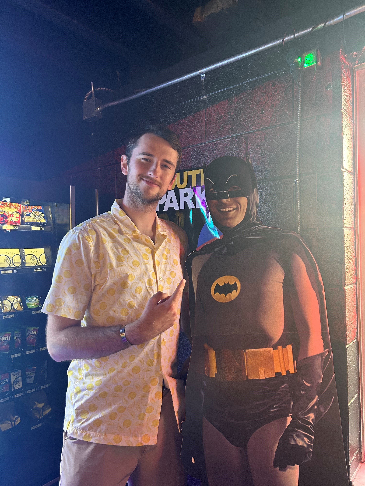

About The Author
The Author of this Blog's name is Seth Maloney. He attends Michigan State University, and works in the Cybersecurity field
He is a huge Detroit Sports Fan, and was mourning the season ending injury of Aidan Hutchinson (which is why this is a day late)